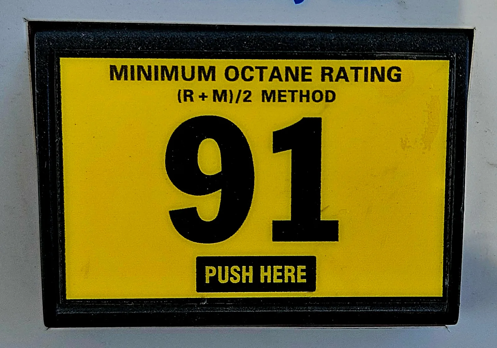
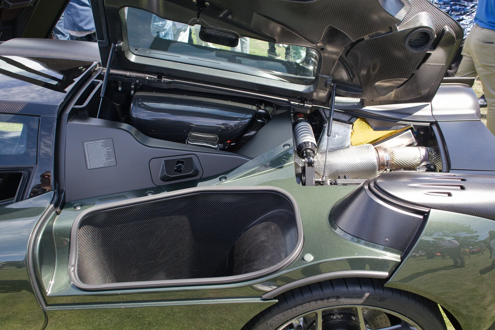
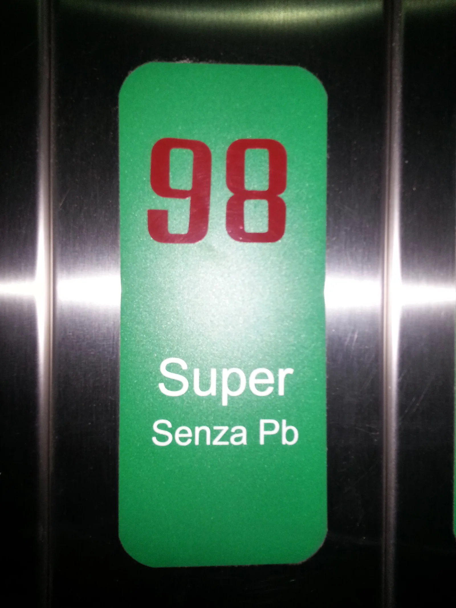

▲ 미국 주유기의 옥탄가 표기. (R+M)/2 방식이라 한국의 RON 표기와 숫자 자체가 다르다
고급유에 대한 가장 흔한 오해는 이겁니다.
"기름이 더 좋으니까 힘이 더 나온다."
옥탄가는 연료의 화력을 나타내는 값이 아닙니다. 오히려 쉽게 타지 않고 버티는 정도를 나타냅니다. 그래서 이 값이 높다고 모든 차에서 출력이 오르지는 않습니다.
1. 옥탄가는 화력이 아니라 '버티는 힘'이다
가솔린 엔진은 피스톤이 혼합기를 압축한 다음, 점화플러그가 불을 붙여 폭발시킵니다. 순서가 중요합니다. 압축이 끝나고 나서 불이 붙어야 합니다.
그런데 압축만으로도 온도와 압력이 올라갑니다. 연료가 이 압력을 못 버티면 점화플러그가 불을 붙이기 전에 스스로 터집니다. 이게 노킹(knocking)입니다. 실린더 안에서 두 개의 화염이 부딪히며 금속을 두드리는 소리가 나서 붙은 이름입니다.
📍 옥탄가의 정의
옥탄가는 이 조기 점화에 얼마나 잘 견디는지를 나타내는 값입니다. 높을수록 더 세게 압축해도 스스로 터지지 않습니다. 연료 1L가 내는 열량과는 관계가 없습니다. 고급유와 일반유의 발열량은 사실상 같습니다.
그래서 결론이 이렇게 나옵니다. 압축비가 높은 엔진은 일반유로는 노킹이 나니 고급유가 필요합니다. 반대로 애초에 노킹이 안 나는 엔진에 고급유를 넣으면, 안 쓰는 성능에 돈을 더 내는 셈입니다.
2. 국내 등급 — 91과 94
| 구분 | 옥탄가(RON) | 비고 |
|---|---|---|
| 보통휘발유 | 91 이상 94 미만 | 일반 주유소의 기본 휘발유 |
| 고급휘발유 | 94 이상 | 최근에는 100 이상 제품도 있다 |
📖 이 기준은 어디서 나오나
휘발유 등급은 「석유 및 석유대체연료 사업법」 제24조와 「석유제품의 품질기준과 검사방법 및 검사수수료에 관한 고시」에 따라 1호(보통)·2호(고급)로 나뉩니다. 검사와 관리는 한국석유관리원이 맡습니다. 주유소에서 옥탄가 숫자를 따로 표시하지 않는 것은, 등급 자체가 이 기준을 충족하도록 규제되고 있기 때문입니다.
여기서 중요한 지점이 있습니다. 국산차 상당수의 권장 옥탄가는 90~92 수준입니다. 그런데 국내 보통휘발유가 이미 91 이상입니다.
즉 대부분의 국산차는 보통휘발유만으로 제조사 권장 조건을 이미 충족합니다. 여기에 고급유를 넣어도 엔진이 쓸 수 있는 여유가 없습니다.
3. 미국 91과 한국 91은 다른 숫자다
해외 차량 정보를 볼 때 자주 혼선이 생기는 부분입니다. 미국 주유기에는 87·89·91 같은 숫자가 붙어 있는데, 이 숫자는 한국의 옥탄가와 계산 방식이 다릅니다.

▲ 미국 주유기의 91 표기. 라벨에 (R+M)/2 방식임이 함께 적혀 있다 ⓒ Wikimedia Commons
| 지역 | 표기 | 계산 |
|---|---|---|
| 한국·유럽 | RON | 연구법 옥탄가 하나만 쓴다 |
| 미국 | AKI | (RON + MON) ÷ 2 — 두 값의 평균 |
MON은 RON보다 통상 8~10 정도 낮게 나옵니다. 그래서 두 값을 평균한 미국식 표기는 같은 연료라도 숫자가 4~5 정도 낮게 찍힙니다.
| 미국 표기 (AKI) | 한국 표기 (RON) 환산 | 해당 등급 |
|---|---|---|
| 87 (Regular) | 약 91~92 | 한국 보통휘발유 |
| 89 (Plus) | 약 93~94 | 경계 |
| 91~93 (Premium) | 약 95~98 | 한국 고급휘발유 |
그래서 "미국에서는 91을 넣으라고 한다"는 말은 한국에서 91을 넣으라는 뜻이 아닙니다. 한국 기준으로는 고급휘발유를 가리킵니다. 수입차 매뉴얼이 원서일 때 특히 조심할 부분입니다.

▲ 제조사가 고급유를 지정하는 것은 압축비와 과급 압력이 그만큼 높기 때문이다 ⓒ Wikimedia Commons
4. 내 차에 필요한지 확인하는 법
추측할 필요가 없습니다. 차에 적혀 있습니다.
✅ 확인 순서
· 주유구 뚜껑 안쪽 — 권장 연료가 스티커로 붙어 있는 경우가 많습니다
· 취급설명서 — 권장 옥탄가가 숫자로 적혀 있습니다
· 계기판 주변 또는 연료 도어 — 차종에 따라 표기 위치가 다릅니다
표현도 구분해서 읽어야 합니다.
| 표현 | 의미 | 일반유를 넣으면 |
|---|---|---|
| Required (필수) | 반드시 고급유 | 출력 제한, 장기적으로 부담 |
| Recommended (권장) | 고급유가 좋지만 가능 | 출력·연비가 조금 떨어진다 |
| 표기 없음 | 보통휘발유 기준 설계 | 문제 없음 |
5. 반대로 넣으면 어떻게 되나
고급유 지정 차에 일반유를 넣었을 때. 요즘 차에는 노킹센서가 있습니다. 노킹이 감지되면 ECU가 점화 시기를 늦춰 노킹을 피합니다. 그래서 즉시 고장 나지는 않습니다.
대신 대가가 있습니다. 점화 시기를 늦춘 만큼 출력이 떨어지고 연비도 나빠집니다. 결과적으로 연료비를 아낀 만큼 연비로 되돌려주는 구조가 됩니다. 고부하 주행(등판, 견인, 고속 추월)에서는 체감이 더 큽니다.
반대로 일반유 차에 고급유를 넣었을 때. 엔진이 이미 노킹 없이 최적 점화 시기로 돌고 있다면, 더 당길 여유가 없습니다. 출력도 연비도 유의미하게 달라지지 않습니다.

▲ 고옥탄 연료. 엔진이 그 성능을 쓸 수 있어야 값을 하는 셈이다 ⓒ Wikimedia Commons
▲ 고압축·고과급 엔진일수록 제조사가 지정한 연료 등급을 지킬 실익이 커진다 ⓒ Wikimedia Commons
6. 그렇다면 고급유는 아무 의미가 없나
옥탄가 외에 하나 더 있습니다. 첨가제입니다.
정유사들은 고급휘발유에 세정 성분을 더 넣는 경우가 많습니다. 흡기 밸브와 인젝터의 카본 퇴적을 줄이는 성분입니다. 이 부분은 옥탄가와 별개의 이야기입니다.
다만 여기에도 조건이 있습니다. 직분사(GDI) 엔진은 연료가 흡기 밸브를 거치지 않고 실린더로 바로 들어갑니다. 그래서 연료 첨가제가 흡기 밸브를 씻어주는 효과를 기대하기 어렵습니다. 국산차에 널리 쓰이는 방식이라 알아둘 만합니다.
📍 정리하면
고급유가 값을 하는 경우는 ① 제조사가 지정한 고압축비·고성능 엔진이거나, ② 여름철 고부하 주행에서 노킹이 실제로 발생하는 상황입니다. 그 외에는 같은 돈으로 연료를 더 넣는 편이 낫습니다.
7. 정리
옥탄가는 연료가 내는 힘이 아니라, 압축을 견디는 정도입니다. 그래서 엔진이 그 여유를 쓸 수 있게 설계돼 있어야 의미가 생깁니다.
국내 보통휘발유는 이미 RON 91 이상이고, 국산차 상당수의 권장 옥탄가가 그 범위 안에 들어옵니다. 이 경우 고급유는 성능이 아니라 첨가제 정도의 차이로 좁혀집니다.
수입차 매뉴얼의 숫자는 표기 방식을 확인하세요. 미국식 91은 한국의 91이 아니라 고급휘발유를 가리킵니다.